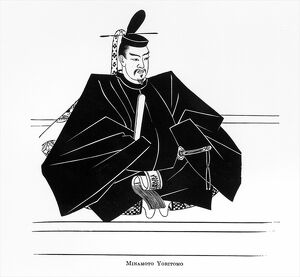
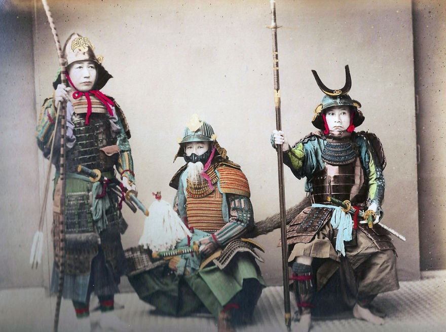

A ascensão do “Xogunato Japônes” .
O Japão vivenciou um longo período feudal que se estendeu de 1185 até 1868, quando então o país ingressou na era moderna. Apesar de ter muitas similaridades com o feudalismo vivenciado no Ocidente, ele se baseava em aspectos essencialmente orientais. O Shogun, que conferia seu título à denominação deste regime, era ao mesmo tempo senhor de terras e líder militar. Em 1192, Minamoto no Yoritomo foi nomeado shogum (ditador militar) do Japão pelo imperador, marcando o início do regime feudal xogunato Kamakura, uma instituição militar permanente que governaria durante quase setecentos anos.
Os vassalos deviam lealdade ao shogum, a quem prestavam serviços públicos tais como guarda de direito em Quioto, onde o imperador vivia com a sua corte. Como contrapartida, o shogum não somente garantia a tradicional posse da terra, como os premiava com novas terras. Esta relação entre senhor e vassalo dava à sociedade japonesa um carácter feudal característico. A economia japonesa era totalmente baseada no comércio e na agricultura, principalmente, do arroz, outro ponto forte era a pesca realizada por navios pesqueiros em alto mar que traziam para terra grande carregamentos de peixes que eram, inclusive, exportadas para países próximos, consolidando assim uma classe mercante e trabalhadora. Com Tokugawa no governo as divisões em classes sociais, iniciadas por Hideyoshi, tornam-se marcantes. Eram elas em ordem hierárquica: samurais, lavradores, artesãos e comerciantes.
Samurais .
Inicialmente era um servidor civil do império japonês, com as funções de cobrador de impostos (coletoria) e administrador de terras (daimyō). Contudo durante o período do Japão feudal, ganhou funções militares e virou um soldado da aristocracia imperial.
Os samurais guerreavam pelo shogun japonês da mesma forma como um cavaleiro europeu defendia seu senhor feudal. Os samurais e os cavaleiros europeus andavam a cavalo, usavam armaduras e lutavam com espadas. Ambos também seguiram um código de bravura e lealdade. Já um Ronin no Japão feudal era um samurai que não seguia a um daimyo, ou seja, que não possuía um mestre - princípio básico do bushido de lealdade ao daimyo.
Nota: Os samurai seguiam o código de honra denominado Bushidô (caminho do guerreiro, desenvolvido nos séculos IX e XII), que ensinava as principais características do samurai (semelhante ao conceito da cavalaria medieval): frugalidade, grande disciplina, lealdade, honra até a morte, habilidade com a espada katana, coragem extrema diante de qualquer situação.
Os samurais detinham uma honra e um orgulho inquebrantáveis, o que os levavam, muitas vezes, a cometer o suicídio honroso, conhecido entre eles como Seppuku, no qual optavam pela morte em lugar de uma existência desonrada. Para tanto, se valiam do tanto, uma faca utilizada cerimonialmente para se pôr fim à vida, um recurso orgulhoso e pleno de dor. Tal preocupação com o espírito que ajudou as artes samurai a se salvar de sua extinção na Restauração Meiji (época em que os samurais viraram burocratas a serviço do governo). O Kobudo, como são conhecidos os estilos de combate criados pelos samurai ainda é praticado atualmente. Envolve uma grande gama de armas diferente e técnicas, como o Kenjutsu (combate com espadas), Naginatajutsu (luta com alabarda),Yarijutsu (arte da lança) e Bōjutsu (arte do bastão). A maioria destas artes tiveram versões modernizadas no século XX, como por exemplo:Kendō, Karatê, Aikido, Judô.
Ninjas .
Ninja era um agente secreto ou mercenário do Japão feudal especializado em artes de guerra não ortodoxas. Eles cumpriam suas missões utilizando métodos secretos de fazer guerra, eram contrastados com os samurais, que tinham regras restritas sobre a honra e combate.

Existem poucos registros escritos para detalhar as atividades do ninja. A palavra jounin não existia para descrever um ninja como agente até o século XV, e é improvável que os espiões e mercenários antes dessa época fossem vistos como um grupo especializado. Mas as funções do ninja incluíam espionagem, sabotagem, infiltração, assassinato e guerrilha assim como combate aberto em determinadas situações. Na época da Restauração Meiji, a tradição do shinobi tornou-se um tema misterioso e do imaginário popular no Japão. O Ninja figurou proeminente na lenda e no folclore, onde foram associados com habilidades lendárias, como invisibilidade, andar sobre a água e controle sobre os elementos, inspirando futuramente obras como Naruto.